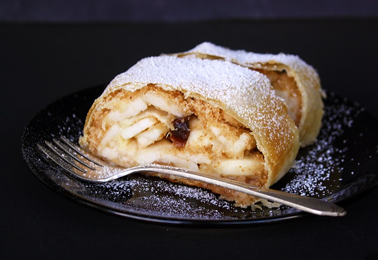

A traditional pastry dessert with a rich and vivid history, apfelstrudel (apple strudel) is one of Austria's most popular delicacies. This sweet treat consists of thin layers of dough filled with a flavorful apple filling. Its story starts with the invention of baklava, a filo pastry popular in the Balkans and the Middle East.
Meal prep time : 1 hour 35 minutes
Servings : 8